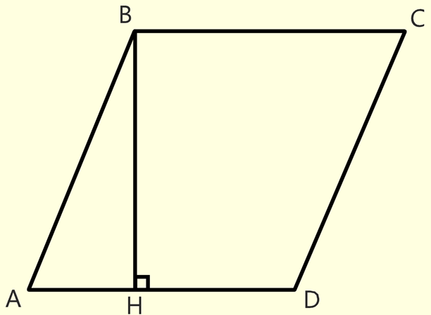

*
Параллелограмм
# Параллелограмм — выпуклый четырёхугольник, у которого противолежащие стороны попарно параллельны.
# В параллелограмме противолежащие стороны равны (AB = CD, BC = AD).
# В параллелограмме противолежащие углы равны, а сумма смежных углов равна 180 градусов (<A = <C, <B = <D)
# Средняя линия параллелограмма - отрезок, соединяющий середины противолежащих сторон.
# Средняя линия параллелограмма параллельна и равна двум другим сторонам.
# Средняя линия параллелограмма проходит через точку пересечеия диагоналей этого параллелограмма.
Формулы площади параллелограмма
-
Площадь параллелограмма равна произведению стороны на высоту, проведенную к этой стороне.
(S = AD * BH)

-
Площадь параллелограмма равна произведению его смежных сторон на синус угла между ними.
(S = AB * AD * sin<BAD)

-
Площадь параллелограмма равна половине произведения диагоналей данного параллелограмма уможить
на синус угла между ними.
(S = AC * BD * sin<COD)
Свойства параллелограмма
# Диагонали паралелограмма делятся точкой их пересечения пополам.
# Параллелограмм диагональю делится на два равных треугольника.
# Средние линии параллелограмма пересекаются в точке пересечения его диагоналей. В этой точке две его диагонали и две его средние линии делятся пополам.
# Диагонали паралелограмма делятся точкой их пересечения пополам.
# Сумма квадратов длин сторон параллелограмма равна сумме квадратов длин его диагоналей
(AB^2 + BC^2 + CD^2 + AD^2 = AC^2 + BD^2)